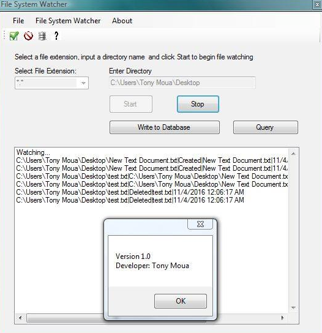

File System Watcher

File System Watcher App
This application listens to the file system change notifications and raises events when a directory or file within the directory changes. This will accept an absolute directory path from the user (e.g. C:\, C:\temp, D:\My Documents) and watch all files and subdirectories within that path. It will then report it to the screen in a list format when a file is deleted, changed, created, renamed. You can also write all your changes to a database. When a database is created and has a list of changes you may search through your database as well in a second form. File System Watcher Source Code
Project Details
- Visual Studios
- C#
- Database
- Sqlite
- GUI